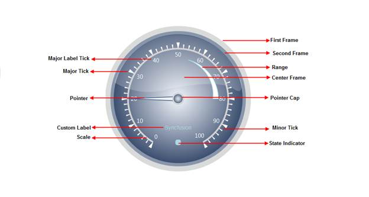

The Circular Gauge control comprises the following elements. All the elements are optional to display the empty gauge control. Gauge scales, Label, Ticks, Label Tick and Pointer elements are collection types. We can host any number of items in it.

Figure 52: Structure of Circular Gauge
Elements and Features
Scales:
Scales are used to control the value ranges and also used as a basis for the placement of child elementssuch as the tick marks. The radius of the scale bar is controlled by the Radius property. By default, the values start from the minimum value and move clock-wise to the maximum value. It is possible to reverse this direction by setting the ScaleDirection property to Anticlockwise.
Pointer:
Circular Pointers are scale indicator that points to a value along a scale. Circular Pointers are highly customizable. Circular Pointers can be added to the circular scale using different parameters to present the scales.
Range:
Ranges are objects that highlight a range of values. Start Value and End value of the range can be specified using its StartValue and Endvalueproperties. The Width of the range can be customized using its StartWidth and EndWidth properties. We can set the location of the range based on the scale position using the DistanceFromScale property and the RangePosition property.
Major and Minor Ticks:
Major Ticks are the primary scale indicators.
Minor Ticks are the secondary scale indicators.
TickStyle property of the tick element specifies the number of the value intervals along the entire length of the scale bar.
Label Tick:
Circular Label comprises numerous options to customize label display. It can be added to the circular scale using its different parameters to present the scales with meaningful labels.
We can set the location of the labels based on the scale position using the DistanceFromScale property and the TickPlacement property. Labels can be shown for Major or Minor ticks. This can be set using the TickStyle property.
Logarithmic labels can be added. Labels can be displayed using formulas and also you can customize the label format.
Pointer Cap:
Anchors the pointer. The Radius of the Pointer Cap be controlled using the PointerCapRadius property.
Gauge Label:
Using the CustomLabel element of gauge, you can add custom text labels to the Essential Gauge.
The label value can be set using its LabelValue property. Also we can customize the custom text, using its FontSize and FontFamily properties.
The location and angle of the label can be customized.